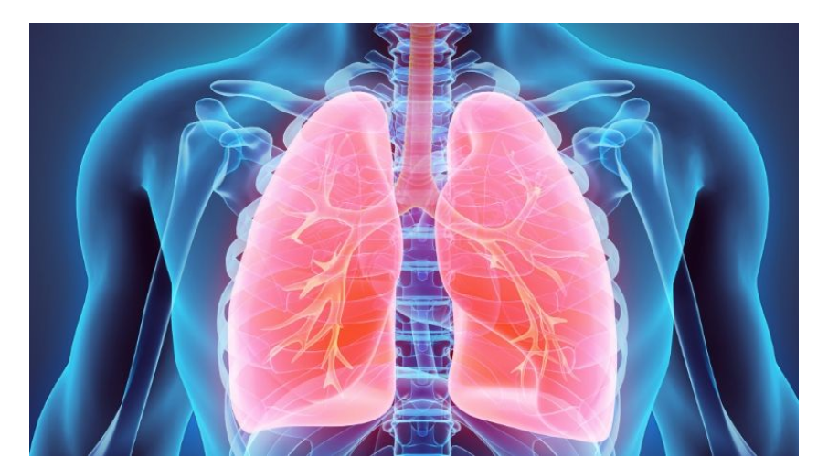

AI-Powered Lung Cancer Detection
Leveraging state-of-the-art EfficientNet architecture to assist radiologists in identifying lung cancer types from CT scans with high precision and explainability.

Deep Learning
Trained on thousands of CT scans for robust classification.
Explainability
Grad-CAM heatmaps show exactly where the AI is looking.
Real-time
Get results and detailed reports in seconds.
Analyze CT Scan
Upload a clear CT scan image (JPG/PNG) for automated analysis.
Drag & drop image here or browse
Scan Preview
AI is processing scan...
Analysis Result
Result
Confidence: 0%
AI Interpretation
The model has identified patterns consistent with .... Please consult with a medical professional for a final diagnosis.
AI Attention (Grad-CAM)
Low Attention
High Attention
The highlighted region shows where the AI model focused its diagnostic attention.